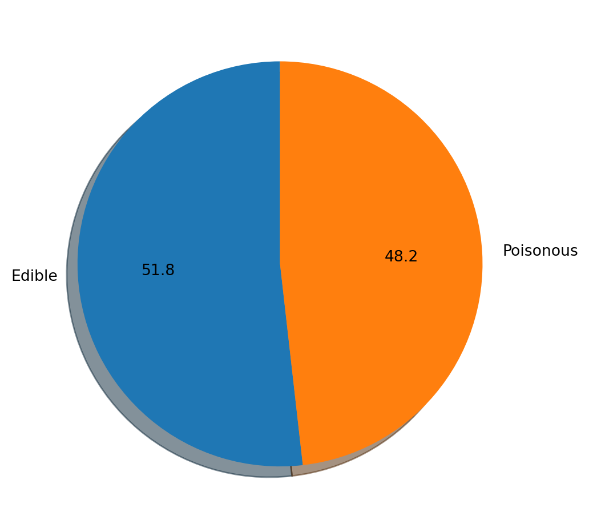
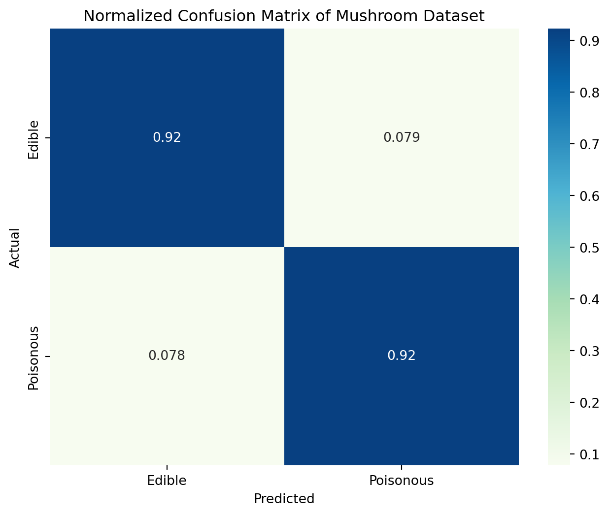
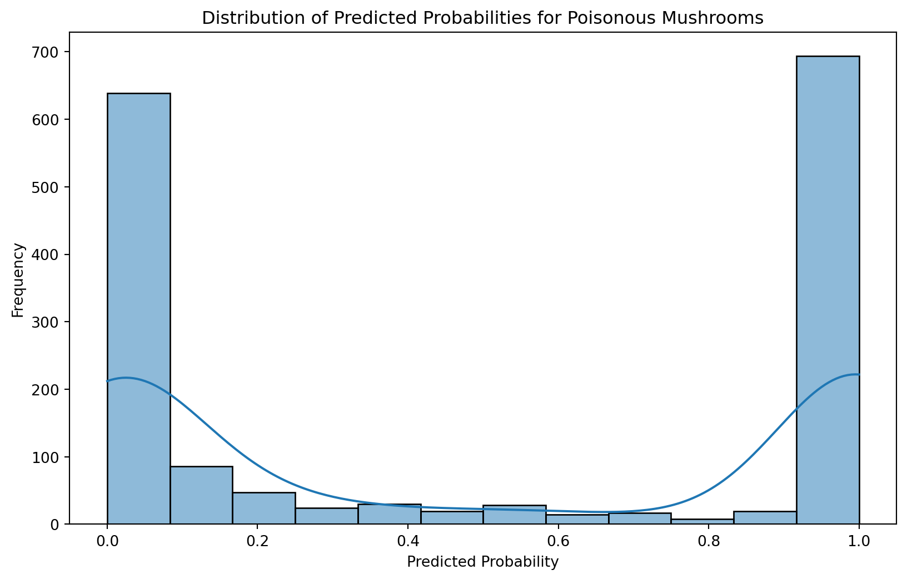

import warnings
warnings.filterwarnings("ignore")
import pandas as pd
import numpy as np
import matplotlib.pyplot as plt
import seaborn as snsBlog-1: Probability theory and random variables
code
analysis
Using Naive Bayes To Predict Poisonous Mushrooms
Introduction
Topic: Probability theory and random variables
In this blog post, we are going to predict if a mushroom is poisonous or not. We are going to apply naive bayes method, which is based on the bayes theorem in probability.
Import Libraries
The Dataset
This dataset includes descriptions of hypothetical samples corresponding to 23 species of gilled mushrooms in the Agaricus and Lepiota Family Mushroom drawn from The Audubon Society Field Guide to North American Mushrooms in 1981. Each species can be identified as definitely edible, definitely poisonous, or of unknown edibility and not recommended. This latter class was combined with the poisonous one. So there 2 classes. Poisonous and edible.
df = pd.read_csv('mushrooms.csv')
df.head()| class | cap-shape | cap-surface | cap-color | bruises | odor | gill-attachment | gill-spacing | gill-size | gill-color | ... | stalk-surface-below-ring | stalk-color-above-ring | stalk-color-below-ring | veil-type | veil-color | ring-number | ring-type | spore-print-color | population | habitat | |
|---|---|---|---|---|---|---|---|---|---|---|---|---|---|---|---|---|---|---|---|---|---|
| 0 | p | x | s | n | t | p | f | c | n | k | ... | s | w | w | p | w | o | p | k | s | u |
| 1 | e | x | s | y | t | a | f | c | b | k | ... | s | w | w | p | w | o | p | n | n | g |
| 2 | e | b | s | w | t | l | f | c | b | n | ... | s | w | w | p | w | o | p | n | n | m |
| 3 | p | x | y | w | t | p | f | c | n | n | ... | s | w | w | p | w | o | p | k | s | u |
| 4 | e | x | s | g | f | n | f | w | b | k | ... | s | w | w | p | w | o | e | n | a | g |
5 rows × 23 columns
Let us now visualize the dataset as a simple pie chart.
plt.figure(figsize = (6,6))
plt.pie(df['class'].value_counts(), startangle = 90, autopct = '%.1f', labels = ['Edible', 'Poisonous'], shadow = True)
plt.show()
Set dependent and independent variables.
X = df.iloc[:, 1:].values
y = df.iloc[:, 0].valuesCheck if there is null value.
df.notnull().all()class True
cap-shape True
cap-surface True
cap-color True
bruises True
odor True
gill-attachment True
gill-spacing True
gill-size True
gill-color True
stalk-shape True
stalk-root True
stalk-surface-above-ring True
stalk-surface-below-ring True
stalk-color-above-ring True
stalk-color-below-ring True
veil-type True
veil-color True
ring-number True
ring-type True
spore-print-color True
population True
habitat True
dtype: boolAll columns are object. So we need to encode them. I am going to use Label Encoding for this. Encode Independent Variable
from sklearn.preprocessing import LabelEncoder
le = LabelEncoder()
X = df.iloc[:, 1:].apply(le.fit_transform).valuesEncode Dependent Variable
from sklearn.preprocessing import LabelEncoder
le = LabelEncoder()
y = np.array(le.fit_transform(y))
y.reshape(len(y), 1)array([[1],
[0],
[0],
...,
[0],
[1],
[0]])Train Test Split
from sklearn.model_selection import train_test_split
X_train, X_test, y_train, y_test = train_test_split(X, y, test_size = 0.2, random_state = 0)ML MODEL
Feature Scaling
Before we apply the GaussianNB method, we need to scale our data. Differences in the scales across input variables may increase the difficulty of the problem being modeled. So I am going to apply standard scaling. Standardization scales each input variable separately by subtracting the mean (called centering) and dividing by the standard deviation to shift the distribution to have a mean of zero and a standard deviation of one.
from sklearn.preprocessing import StandardScaler
sc = StandardScaler()
X_train = sc.fit_transform(X_train)
X_test = sc.fit_transform(X_test)Now we can go ahead and try to fit out data in out model.
from sklearn.naive_bayes import GaussianNB
classifier = GaussianNB()
classifier.fit(X_train, y_train)
y_pred = classifier.predict(X_test)
y_prob = classifier.predict_proba(X_test)from sklearn.metrics import accuracy_score
accuracy_nb = accuracy_score(y_test, y_pred)
print('Accuracy is:', accuracy_nb)Accuracy is: 0.9218461538461539Confusion Matrix
from sklearn.metrics import confusion_matrix
cm = confusion_matrix(y_test, y_pred, normalize='true')
plt.figure(figsize=(8, 6))
sns.heatmap(cm, annot=True, cmap='GnBu', xticklabels=['Edible', 'Poisonous'], yticklabels=['Edible', 'Poisonous'])
plt.title('Normalized Confusion Matrix of Mushroom Dataset')
plt.xlabel('Predicted')
plt.ylabel('Actual')
plt.show()
Distribution
The resulting plot provides insights into how confident the Naive Bayes classifier is when predicting whether a mushroom is poisonous. The x-axis represents the predicted probabilities, and the y-axis represents the frequency of occurrences at each probability level.
plt.figure(figsize=(10, 6))
sns.histplot(y_prob[:, 1], kde=True)
plt.title('Distribution of Predicted Probabilities for Poisonous Mushrooms')
plt.xlabel('Predicted Probability')
plt.ylabel('Frequency')
plt.show()
Conclusion
In this blog post, we explored the GaussianNB model and achieved a score of 0.92 on our model. I do believe that other techniques might be more accurate in making the same predictions. I will update this blog when i try them out.